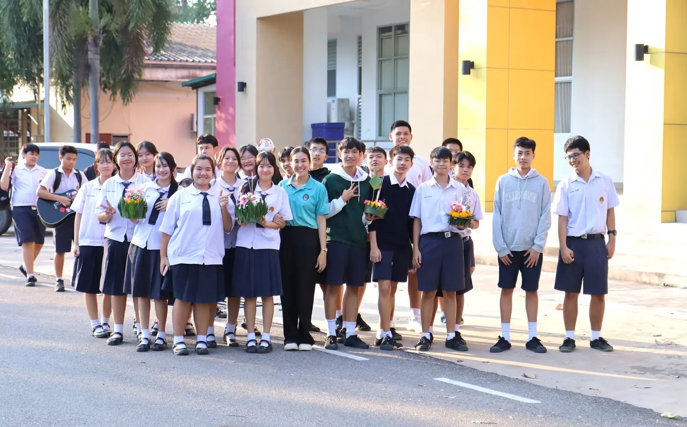
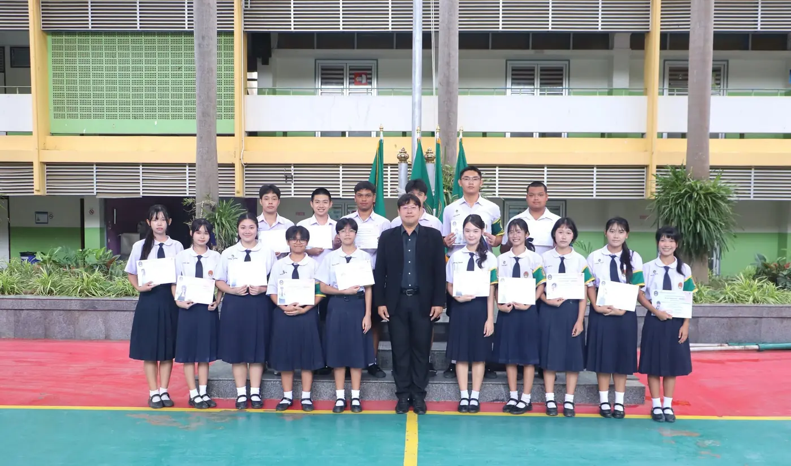

โรงเรียนต้นแบบA model schoolในรั้วมหาวิทยาลัยon a university campus
โรงเรียนสาธิต มหาวิทยาลัยราชภัฏเพชรบุรี เป็นโรงเรียนต้นแบบในการจัดการศึกษา มุ่งเน้นความเป็นเลิศด้านวิทยาศาสตร์และคณิตศาสตร์ เปิดสอนตั้งแต่ระดับอนุบาลจนถึงมัธยมศึกษาปีที่ 6The Demonstration School of Phetchaburi Rajabhat University is a model school that aims for excellence in science and mathematics, teaching from kindergarten to Mathayom 6.


โรงเรียนในมหาวิทยาลัยA school inside a university
โรงเรียนสาธิตเป็นโรงเรียนที่อยู่ในสังกัดมหาวิทยาลัย ทำหน้าที่เป็นโรงเรียนต้นแบบในการจัดการเรียนการสอน นักเรียนจึงได้เรียนในบรรยากาศของมหาวิทยาลัย ใกล้ชิดกับแหล่งเรียนรู้และผู้เชี่ยวชาญA demonstration school belongs to a university and serves as a model of teaching. Its pupils learn in a university setting, close to its resources and experts.
โรงเรียนสาธิต มหาวิทยาลัยราชภัฏเพชรบุรี ตั้งอยู่ที่ถนนหาดเจ้าสำราญ ตำบลนาวุ้ง อำเภอเมือง จังหวัดเพชรบุรีThe Demonstration School of Phetchaburi Rajabhat University is on Hat Chao Samran Road, Na Wung, Mueang Phetchaburi.
จากมหาวิทยาลัย สู่โรงเรียนสาธิตFrom a university to its school
มหาวิทยาลัยราชภัฏเพชรบุรีPhetchaburi Rajabhat University
ก่อตั้งสถาบันที่ต่อมาเป็นมหาวิทยาลัยราชภัฏเพชรบุรีThe institution that became the university is founded.
ก่อตั้งโรงเรียนสาธิตThe demonstration school opens
ตามข้อมูลจากเพจโรงเรียนAccording to the school's page.
อนุบาล ถึง ม.6Kindergarten to M.6
เปิดสอนครบทุกช่วงชั้น เน้นวิทยาศาสตร์และคณิตศาสตร์Every stage of school, with a focus on science and maths.
สิ่งที่เรายึดถือWhat we stand for
อัตลักษณ์Identity
ซื่อสัตย์ มีวินัย ใฝ่เรียนรู้ กตัญญู มีภาวะผู้นำ
เอกลักษณ์: เป็นเลิศทางวิชาการ ผสานคุณธรรม พัฒนากิจกรรมนักเรียนHonest, disciplined, eager to learn, grateful, ready to lead.
Hallmark: academic excellence joined with good character and active student life.
วิสัยทัศน์Vision
มุ่งพัฒนาศักยภาพของผู้เรียนให้มีความสามารถพิเศษทางด้านวิทยาศาสตร์ คณิตศาสตร์ คอมพิวเตอร์และภาษาต่างประเทศ แข่งขันด้านวิชาการได้ในระดับสากล นำความรู้มาประยุกต์ใช้กับภูมิปัญญาท้องถิ่น และมีความรู้คู่คุณธรรม อยู่ในสังคมอย่างมีคุณค่าและมีความสุขTo develop every learner’s talent in science, mathematics, computing and foreign languages, so they can compete academically at an international level, apply what they know to local wisdom, and live with knowledge, good character and happiness.
พันธกิจMission
1. สอนระดับมัธยมต้นและมัธยมปลาย พัฒนาหลักสูตร กระบวนการเรียนรู้ และแหล่งเรียนรู้ ที่เน้นความเป็นเลิศทางวิทยาศาสตร์และคณิตศาสตร์
2. ร่วมมือกับหน่วยงานในมหาวิทยาลัย ทดลอง ค้นคว้า วิจัย และพัฒนาองค์ความรู้ด้านการศึกษา
3. ให้หน่วยงานที่เกี่ยวข้องและภาคเอกชนมีส่วนร่วมพัฒนามาตรฐานการศึกษาของโรงเรียน1. Teach lower and upper secondary, and develop curricula, learning methods and resources focused on excellence in science and mathematics.
2. Work with university departments to trial, research and build knowledge in education.
3. Bring partner agencies and the private sector into raising the school’s standards.

ที่มาของข้อมูลSources (6)
- หน้าเกี่ยวกับโรงเรียนสาธิต (เว็บไซต์ มรภ.เพชรบุรี)About the Demonstration School (PBRU website) · ดูต้นฉบับsource
- เพจ Facebook โรงเรียนสาธิต มหาวิทยาลัยราชภัฏเพชรบุรีThe school's Facebook page · ดูต้นฉบับsource
- ประวัติมหาวิทยาลัยราชภัฏเพชรบุรีHistory of Phetchaburi Rajabhat University · ดูต้นฉบับsource
- Wikipedia: List of demonstration schools in ThailandWikipedia: List of demonstration schools in Thailand · ดูต้นฉบับsource
- หน้าติดต่อโรงเรียนสาธิต (เว็บไซต์ มรภ.เพชรบุรี)Contact page (PBRU website) · ดูต้นฉบับsource
- ภาพป้ายมหาวิทยาลัย: Fifa 26114, CC BY 4.0, Wikimedia CommonsUniversity sign photo: Fifa 26114, CC BY 4.0, Wikimedia Commons · ดูต้นฉบับsource